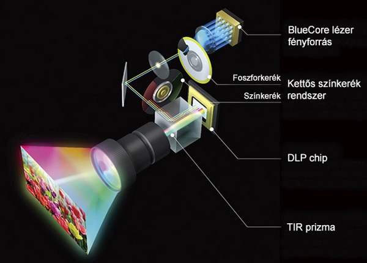
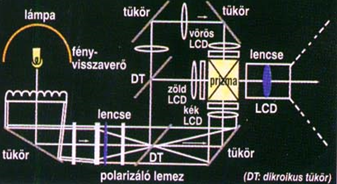

A projektor, videoprojektor vagy digitális kivetítő a számítástechnikában egy kimeneti eszköz. A számítógéptől egy kábelen videó jelet kap és az ennek megfelelő képet a lencséjén keresztül kivetíti egy külső felületre, például falra, vászonra, stb…
A videoprojektorok fontos tulajdonsága a felbontás. Másik fontos tulajdonságuk a fényerő, melyet lumenben (lm) mérnek. A láthatóség szempontjából a kivetített kép mérete is lényeges, mert a készülék fényereje konstans, holott a vetített képméret növelésével a megvilágításhoz szükséges fényerőnek is arányosan kellene növekednie. A kivetített kép minősége még függ továbbá az akusztikus zajszinttől és kontraszttól is.
Működésének kulcsa egy félvezető chip, amely több millió apró tükör mozgatásával éri el a megfelelő színélményt. Mivel a DLP teljes egészében digitális technológia, ezért teljes egészében kiküszöböli a kép torzulását és kristálytiszta képet biztosít. Hátránya főleg a régebbi eszközök esetében, hogy hosszabb ideig nézve az általa vetített képet egy idő után szemfájást okozhat a színtárcsa állandó mozgása miatt.
A DLP projektor felépítése
Az LCD egy újabb technológia a projektorok területén. Élesebb, színgazdagabb képek vetítésére alkalmas, mint a DLP projektorok, mindezt a szemet fárasztó technológia nélkül.
LCD projektor felépítése